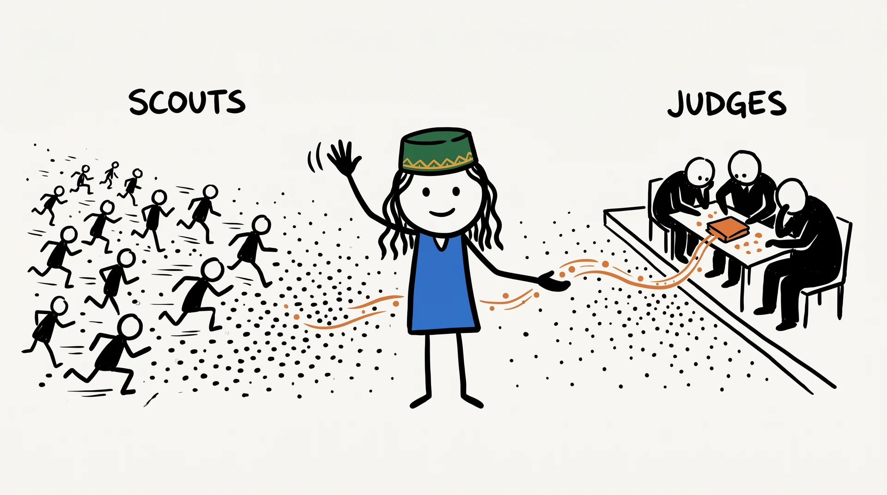

От оценки документа к решению под неопределённостьюFrom document scores to decisions under uncertainty
Порядок ≠ вероятность ≠ действиеOrder ≠ probability ≠ action
Серёга возвращается к Судьям из L10. Теперь проверяем, что означает их число.Séréga returns to the judges of L10. Now we test what their numbers mean.
Из распределения получить порядок и пересчитать nDCG.Turn a distribution into a ranking; recompute nDCG.
Назвать событие и проверить вероятностную шкалу.Name the event and test the probability scale.
Вывести порог из цены ошибки и проверить контроллер.Derive a threshold from error costs; test the controller.
Можно ли подключить монитор M2 к порту U1 ноутбука Vega14 кабелем C7?Can monitor M2 connect to Vega14 port U1 using cable C7?
Реклама семейства Vega: USB-C, кабели, мониторы.Vega family advert: USB-C, cables, monitors.
Orion9: порт P4 обслуживает клавиатуру.Orion9: port P4 services the keyboard.
C7 передаёт видео по V7; подходит к M2.C7 carries V7 video; compatible with M2.
Vega14 + U1 + C7 + M2: подключение поддерживается.Vega14 + U1 + C7 + M2: connection supported.
Все устройства, документы и исходный порядок вымышлены. Это не измеренная выдача BM25.All devices, documents and this initial order are fictional. This is not a measured BM25 result.
| УровеньGrade | УсловиеCondition | ПримерExample |
|---|---|---|
| 0 | Нет полезного факта для вопросаNo useful fact for the question | D |
| 1 | Та же тема, но ответа нетSame topic; no answering fact | A |
| 2 | Часть нужных фактов; есть пробелSome required facts; a gap remains | B |
| 3 | Прямой достаточный ответ: да или нетA direct sufficient answer: yes or no | C |
Выбираем самый высокий полностью выполненный уровень. Разметка не зависит от оценки модели.Select the highest fully satisfied level. Human labels do not depend on model scores.
«Подключение поддерживается».“This connection is supported.”
«Подключение не поддерживается».“This connection is not supported.”
| ВопросQuestion | C | C− |
|---|---|---|
| Достаточно для ответа?Sufficient to answer? | ДаYes | ДаYes |
| Полезная релевантностьUseful relevance | 3 | 3 |
| Поддерживает положительное утверждение?Supports the positive claim? | supports | contradicts |
Отрицательный ответ может быть именно тем, что нужно пользователю.A negative answer may be exactly what the user needs.
Порядок проверяем метриками поиска; вероятности — частотами; действия — последствиями.Test rankings with retrieval metrics, probabilities with frequencies, and actions with consequences.
Какой ответ может безопасно прочитать обычный код?Which answer can ordinary code safely read?
statequestionJev оценивает; код сортирует и выбирает действие. Индекс и генератор остаются отдельными компонентами.Jev estimates; code sorts and selects an action. The index and answer generator remain separate components.
TypeSafe · Primitives · сверено 01.10.2026checked 2026-10-01
| ТипType | ВопросQuestion | Что читатьRead |
|---|---|---|
Choice | Поддерживает / опровергает / не сказано?Supports / contradicts / not stated? | choice · probabilities · confidence |
Score | Какой уровень рубрики 0–3?Which rubric grade 0–3? | score · legend · probabilities |
Noul | Достаточно ли фактов для ответа?Are the facts sufficient to answer? | noul = P(yes) |
Score.score — ожидание номера уровня. Noul не имеет отдельного confidence.Score.score is the expected grade index. Noul has no separate confidence field.
TypeSafe · Primitives · сверено 01.10.2026checked 2026-10-01
«Оцени релевантность от плохой до отличной».“Rate relevance from poor to excellent.”
Уровень 1: тема совпадает, фактов нет.
Уровень 2: назван хотя бы один необходимый факт, но не все.Grade 1: topic overlap, no required fact.
Grade 2: at least one necessary fact, but not all.
Для B известен профиль C7, но не поддержка Vega14. Поэтому 2, а не 3.For B, the C7 profile is known, but Vega14 support is not. Therefore 2, not 3.
from typesafe_sdk import Noul, TypeSafeClient
question = Noul(instructions=(
"Using only state.passage, can state.query "
"be answered completely without external facts?"
))
with TypeSafeClient(model="jev-1.13.0") as client:
response = client.system_one(
state=state, questions={"answerable": question})
p = response.answers["answerable"].noulПример интерфейса, не запись облачного прогона. Ключ вне кода; ID вопроса не заменяет инструкцию.Interface example, not a cloud-run transcript. Keep the key outside code; the question ID is not an instruction.
TypeSafe · Python sync client · сверено 01.10.2026checked 2026-10-01
Вопросы используют один state. Их ответы не становятся входами друг друга.Questions share state. Their answers do not become one another’s inputs.
Для проверки уже созданного ответа нужен новый вход и новый вызов.Checking a generated answer needs a new input and another call.
Нельзя предполагать \(P(B\mid A)=P(B)\) без основания для независимости событий.Do not assume \(P(B\mid A)=P(B)\) without grounds for event independence.
TypeSafe · Primitives · сверено 01.10.2026checked 2026-10-01
Reinforcement Learning for Calibrated Decisions
Обучение типизированным решениям с вероятностями.Training toward typed decisions with probabilities.
Полная функция потерь RLCD; число параметров; воспроизводимый вычислительный граф.The full RLCD objective; parameter count; a reproducible computation graph.
Следующая формула объясняет общий принцип честного прогноза. Это не реконструкция RLCD.The next formula explains truthful forecasting in general. It is not a reconstruction of RLCD.
TypeSafe · Machine-learning primer · сверено 01.10.2026checked 2026-10-01
Истинная частота события — π.The event has true probability π.
Первое слагаемое минимально. Второе от p не зависит.The first term is minimized. The second does not depend on p.
Общая математика Brier score; не опубликованная формула обучения Jev.General Brier-score mathematics; not a published Jev training objective.
{"choice": "supports"}
Допустимое значение; код может его обработать.A valid value that software can handle.
Фрагмент говорит «не поддерживается», но выбрана метка supports.The passage says “not supported”, yet the selected label is supports.
Числа, даты и версии проверяй кодом. Враждебный текст — отдельный стресс-тест.Check arithmetic, dates and versions in code. Adversarial text requires a separate stress test.
TypeSafe · Jev 1.13 jaggedness · сверено 01.10.2026checked 2026-10-01
Кто решает, сколько стоит каждый уровень полезности?Who decides how much each relevance grade is worth?
| r | 0 | 1 | 2 | 3 |
|---|---|---|---|---|
| СмыслMeaning | Нет фактовNo facts | Только темаTopic only | Часть фактовPartial facts | Достаточный ответSufficient answer |
| g(r) | 0 | 1 | 3 | 7 |
Это выбранная нами полезность для nDCG, а не закон природы и не поле confidence.This is our chosen nDCG gain, not a law of nature or the confidence field.
Для фиксированных кандидатов это максимизирует ожидаемый DCG с аддитивным gain и убывающим позиционным весом.For fixed candidates, this maximizes expected DCG with additive gain and decreasing position weights.
| r | 0 | 1 | 2 | 3 |
|---|---|---|---|---|
| P(r) | 0,020.02 | 0,030.03 | 0,150.15 | 0,800.80 |
| g(r) | 0 | 1 | 3 | 7 |
Синтетика: оценки C/B/A/D = 6,08 / 3,25 / 1,50 / 0,29. Это не ответы Jev.Synthetic: scores C/B/A/D = 6.08 / 3.25 / 1.50 / 0.29. These are not Jev responses.
\(\sum_r p_r(2^r-1)=6{,}08\)\(\sum_r p_r(2^r-1)=6.08\)
\(2^{\sum_r p_r r}-1=2^{2{,}73}-1\)\(2^{\sum_r p_r r}-1=2^{2.73}-1\)
Нельзя взять Score.score и просто подставить его в экспоненту. Нужны вероятности уровней.Do not simply exponentiate Score.score. Use the grade probabilities.
Сначала предскажи результат, затем измени полезность.Predict the result before changing the utility.
| ПорядокOrder | DCG@3 | nDCG@3 | RR | Recall@3 |
|---|---|---|---|---|
| A → D → B → C | 2,52.5 | 0,26620.2662 | 1/3 | 1/2 |
| C → B → A → D | 9,39289.3928 | 1 | 1 | 1 |
Синтетика. Для RR и полноты полезен r ≥ 2. Один запрос даёт RR, не среднее MRR.Synthetic. For RR and recall, useful means r ≥ 2. One query yields RR, not a mean MRR.
Прямого ответа нет во входе реранкера.The direct answer is absent from the reranker’s input.
Из двух полезных документов остался один. Это потолок полноты набора.Only one of two useful documents remains. That caps candidate recall.
Измеряй извлечение отдельно. nDCG = 1 внутри кандидатов не означает идеальный поиск по корпусу.Measure retrieval separately. Candidate-conditioned nDCG = 1 does not mean perfect corpus-wide search.
Юридические фрагменты; BM25-кандидаты; демонстрация переранжирования.Legal passages; BM25 candidates; a reranking demonstration.
Фиксированные размеченные списки; отдельная настройка рубрики; проверка ожидаемой полезности.Fixed judged lists; separate rubric development; testing expected utility.
Это свидетельства в конкретных условиях. Не доказательство победы над любым CE, русским поиском или полным поисковым конвейером.These are evidence within specific conditions, not proof against every CE, Russian retrieval, or an end-to-end search pipeline.
TypeSafe · Rerank cookbook · сверено 01.10.2026checked 2026-10-01
Elastic Search Labs · e-commerce reranking · сверено 01.10.2026checked 2026-10-01
Если nDCG не изменился, одинаково ли безопасен порог 0,65?If nDCG is unchanged, is threshold 0.65 equally safe?
Найди документы, которые пересекли порог. Порядок не менялся, решение менялось.Find documents that crossed the threshold. Ranking stayed fixed; decisions did not.
Гудхарт возвращается: метрика отвечает на свой вопрос, не на любой удобный нам.Goodhart returns: a metric answers its own question, not every question we wish to ask.
Число без названного события нельзя проверить.A number without a named event cannot be tested.
scoreОжидание номера уровня рубрики. Может быть больше единицы.Expected rubric grade. It can exceed one.
p_usefulДля Y = 1[r ≥ 2]: P(r = 2) + P(r = 3).For Y = 1[r ≥ 2]: P(r = 2) + P(r = 3).
confidenceСводка формы распределения. Не вероятность правильности.A distribution-shape summary. Not probability of correctness.
Точная формула confidence в изученной странице не указана. Не подменяй её своей энтропией.The reviewed page does not specify the exact confidence formula. Do not silently substitute entropy.
TypeSafe · Confidence · сверено 01.10.2026checked 2026-10-01
Среди прогнозов около 0,8 событие должно происходить примерно в 80 % случаев на целевой популяции.Among forecasts near 0.8, the event should occur about 80% of the time in the target population.
Это проверяемое частотное утверждение, не гарантия для конкретного документа.This is a testable frequency claim, not a guarantee for one document.
Сначала сравни p и p′, затем попробуй температуру исходных логитов.Compare p and p′ first; then try temperature on the original logits.
| НаборSet | Квадраты ошибокSquared errors | СреднееMean |
|---|---|---|
| p | 0,01 + 0,04 + 0,09 + 0,040.01 + 0.04 + 0.09 + 0.04 | 0,0450.045 |
| p′ | 0,36 + 0,49 + 0,01 + 0,00250.36 + 0.49 + 0.01 + 0.0025 | 0,2156250.215625 |
Учебные метки y = [0, 0, 1, 1]. Brier оценивает вероятностный прогноз, но не изолирует только калибровку.Toy labels y = [0, 0, 1, 1]. Brier evaluates probability forecasts, but does not isolate calibration alone.
Чем ближе p к нулю, тем больше штраф −ln p.As p approaches zero, the penalty −ln p grows.
Чем ближе p к единице, тем больше штраф −ln(1−p).As p approaches one, the penalty −ln(1−p) grows.
Для численного расчёта заранее фиксируем epsilon. Не скрываем уверенные ошибки обрезкой после теста.Fix epsilon before numerical evaluation. Do not hide confident errors by changing clipping after the test.
Иллюстрация по четырём точкам p: группы [0; 0,5) и [0,5; 1]. Частоты 0 и 1 здесь крайне ненадёжны; это не проверка Jev.Illustration from the four p values: bins [0, 0.5) and [0.5, 1]. Frequencies 0 and 1 are highly uncertain here; this is not a Jev evaluation.
В отчёте: границы интервалов, средний прогноз, доля положительных меток, n и интервал неопределённости.In a real report: bin edges, mean prediction, positive-label frequency, n and uncertainty intervals.
Основной отчёт фиксирует пять равных интервалов; последний включает 1. Пустые группы имеют нулевой вес.The primary report fixes five equal-width bins; the last includes 1. Empty bins carry zero weight.
Не выбирай группировку по самому красивому результату. Чувствительность показывай отдельно.Do not select the binning that looks best. Report sensitivity separately.
Каждому документу — базовая частота полезности, оценённая до теста.Every document gets the usefulness base rate estimated before testing.
Совпасть с общей частотой — может. Отличить хороший документ от плохого — нет.It can match the overall frequency. It cannot distinguish good documents from bad ones.
Калибровка не заменяет различающую способность. Сравнивай с константным бейзлайном.Calibration does not replace discrimination. Include a constant-probability baseline.
Порядок бинарных логитов; сторона относительно вероятности 0,5.Binary-logit order; which side of probability 0.5 a point lies on.
Brier, log loss, отбор по фиксированному порогу.Brier, log loss, selection at a fixed threshold.
Guo et al. · On Calibration of Modern Neural Networks · сверено 01.10.2026checked 2026-10-01
Рубрика, критерии, варианты политики.Rubric, criteria, candidate policies.
Калибратор и пороги по выбранному правилу.Calibrator and thresholds under a fixed rule.
Окончательная оценка. Ничего не настраиваем.Final evaluation. No tuning.
Перевод, парафраз и почти дубликат остаются вместе. После просмотра test новая идея требует новой проверки.Translations, paraphrases and near-duplicates stay together. A new idea after viewing test requires new validation.
У Jev английский — основной язык. Естественные русские запросы — отдельный срез.English is Jev’s primary language. Natural Russian queries form a separate slice.
От технических руководств к медицине или праву шкала может сместиться.Moving from technical manuals to medicine or law can shift the scale.
Показываем число запросов и интервалы, а не только среднее.Report query counts and intervals, not only a mean.
Калибровка на старой выборке не выдаёт пожизненную лицензию на порог.Calibration on an old sample is not a lifetime license for a threshold.
TypeSafe · Models · сверено 01.10.2026checked 2026-10-01
Модель оценивает событие. Кто отвечает за цену ошибки?The model estimates an event. Who owns the cost of an error?
| ДействиеAction | Полезен Y=1Useful Y=1 | Не полезен Y=0Not useful Y=0 |
|---|---|---|
| Пропустить в контекстPass into context | 0 | 4 |
| ОтброситьDrop | 1 | 0 |
Пропустить неполезный фрагмент дорого.Passing a useless passage is costly.
Потерять полезный фрагмент тоже стоит чего-то.Dropping a useful passage also has a cost.
Условная учебная матрица. Это не денежная оценка реального ущерба.An illustrative loss matrix, not a monetary estimate of real harm.
При равенстве выбираем drop. В общем случае: C_FP / (C_FP + C_FN), если остальные потери нулевые.Choose drop at equality. In general: C_FP / (C_FP + C_FN), if the other losses are zero.
Пропустить: 0,6; отбросить: 0,85 → пропустить.Pass: 0.6; drop: 0.85 → pass.
Пропустить: 1,2; отбросить: 0,7 → отбросить.Pass: 1.2; drop: 0.7 → drop.
Сравни две задачи: почему близкие пороги ещё не означают одинаковую политику?Compare the two tasks: why do similar thresholds not imply the same policy?
C7 использует V7 и совместим с M2.
Неизвестна поддержка ноутбука.C7 uses V7 and supports M2.
Laptop support remains unknown.
Vega14 U1 поддерживает M2 через V7.
Неизвестен профиль C7.Vega14 U1 supports M2 via V7.
The C7 profile remains unknown.
Вымышленный пример. max(p_answerable) не универсальный агрегатор: два неполных фрагмента могут дополнять друг друга.Fictional example. max(p_answerable) is not a universal aggregator: two incomplete passages can complement each other.
Уточнить модель или версию устройства.Ask for the device model or version.
Не более одного дополнительного поиска.At most one additional search.
Назвать конфликт или передать на проверку.Expose the conflict or route for review.
Это кандидатная политика, не доказанный оптимум. Для трёх действий нужны отдельные потери и вероятности успеха.This is a candidate policy, not a proven optimum. Three actions need their own losses and success probabilities.
Максимальное покрытие; ошибки контекста не отсекаются.Maximum coverage; insufficient contexts are not filtered.
Нулевое покрытие; условный риск не определён. Это не победа.Zero coverage; conditional risk is undefined. This is not a victory.
Для контекста: L(allow)=9(1−p_ctx), L(defer)=1 → p_ctx > 8/9. Не путай с фильтром 4/1.For context: L(allow)=9(1−p_ctx), L(defer)=1 → p_ctx > 8/9. Do not confuse it with the 4/1 filter.
Timeout или неверная схема → исходный порядок всего запроса + запись деградации.Timeout or invalid schema → original order for the entire query + a degradation log.
Данные могут содержать инструкции. Отдельный тест; никакой гарантии защиты от инъекций.Data may contain instructions. Test separately; no guarantee of injection immunity.
Ограничь повторы, параллелизм и общий deadline, не только timeout одного вызова.Bound retries, concurrency and the full deadline, not only one call’s timeout.
Не смешивай BM25-score и Jev-gain в одной сортировке. Отсутствующий прогноз нельзя подменить уверенностью.Do not mix BM25 scores and Jev gains in one sort. A missing forecast is not a confident prediction.
TypeSafe · Jev 1.13 jaggedness · сверено 01.10.2026checked 2026-10-01
Что должно улучшиться, чтобы оправдать ещё одну модель?What must improve to justify another model?
assert candidate_ids["bm25"] == candidate_ids["ce"]
assert candidate_ids["ce"] == candidate_ids["jev"]
assert visible_text["ce"] == visible_text["jev"]Если длина входа различается, общий доступный текст сравниваем отдельно от преимущества длинного контекста.If input lengths differ, compare common visible text separately from any long-context advantage.
Полезность 0–3 по рубрике; разметчик не видит оценки моделей.Usefulness 0–3 under the rubric; annotators do not see model scores.
Список необходимых фактов; достаточность; конфликт; недостающий параметр.Required facts; sufficiency; conflict; missing user parameter.
Синтетические метки лабораторной объясняют метод, но не заменяют независимую разметку реального корпуса.Synthetic lab labels teach the method; they do not replace independent annotation of a real corpus.
| СистемаSystem | candidate nDCG@10 | pool nDCG@10 | Δ и интервалΔ and interval |
|---|---|---|---|
| BM25 | нет прогонаnot run | нет прогонаnot run | — |
| CE | нет прогонаnot run | нет прогонаnot run | — |
| Jev | нет прогонаnot run | нет прогонаnot run | — |
Шаблон, не результаты. Первый IDCG — внутри кандидатов, второй — по общему размеченному пулу.Template, not results. The first IDCG is candidate-conditioned; the second uses the shared judged pool.
| Поле разбораAnalysis field | Что записатьRecord |
|---|---|
| Вопрос и ограничениеQuestion and constraint | Какой факт требовался?Which fact was required? |
| Доступный фрагментVisible passage | Был ли факт вообще виден модели?Was the fact visible to the model? |
| Gold и прогнозGold and prediction | Ошибка рубрики, оценки или разметки?Rubric, prediction or annotation error? |
| ПоследствиеConsequence | Изменился порядок, порог или ответ?Did ranking, thresholding or the answer change? |
До реального прогона это шаблон. Пример C− — учебная ловушка, не обнаруженная ошибка Jev.Before a real run, this is a template. C− is a teaching trap, not an observed Jev failure.
| СрезSlice | Число семействFamily count | Качество + интервалQuality + interval | ОшибкиErrors |
|---|---|---|---|
| EN | после сбораafter collection | — | — |
| RU | после сбораafter collection | — | — |
| Нет ответаNo answer | после сбораafter collection | — | — |
Показываем естественные запросы, а не только переводы. Если группы зависимы, интервалы считаем по семействам.Use natural queries, not translations alone. If groups are dependent, compute intervals at the family level.
Конфликты, отвлекающий текст, отрицание. Не подменяют частоты основной выборки.Conflicts, distractors, negation. They do not estimate main-population frequencies.
| ПрогнозForecast | Источник шкалыScale source | Отчёт на testTest report |
|---|---|---|
| Jev | P(r=2)+P(r=3)P(r=2)+P(r=3) | Brier · LogLoss |
| CE | Калибратор только на calibrationCalibrator fitted only on calibration | Brier · LogLoss |
| КонстантаConstant | Базовая частота с developmentDevelopment base rate | Brier · LogLoss |
Добавь диаграмму калибровки с n. Min–max BM25 и сырой логит CE не становятся вероятностями по названию.Add a reliability diagram with n. Min–max BM25 and raw CE logits do not become probabilities by relabeling.
| ПолитикаPolicy | ПокрытиеCoverage | Неподдержанные разрешенияUnsupported allows | ПотеряLoss |
|---|---|---|---|
| Всегда разрешатьAlways allow | — | — | — |
| Всегда откладыватьAlways defer | — | — | — |
| Простой бейзлайнSimple baseline | — | — | — |
| Jev | — | — | — |
Шаблон. Событие — достаточно ли фиксированного контекста; не «получился ли красивый ответ».Template. The event is whether the fixed context is sufficient, not whether the generated answer sounds good.
Фактические usage, тариф и версия на дату прогона.Actual usage, pricing and version on the run date.
p50/p95 целого запроса; сеть, регион, параллелизм и таймауты.Whole-query p50/p95; network, region, concurrency and timeouts.
Сумма длительностей вызовов не равна задержке при параллельном выполнении. Локальный replay не измеряет облачный p95.Summed call durations do not equal parallel end-to-end latency. Local replay does not measure cloud p95.
TypeSafe · Models · сверено 01.10.2026checked 2026-10-01
Нужное событие оценивается лучше; политика снижает согласованную потерю; цена укладывается в бюджет.The target event is estimated better; policy loss decreases; cost stays within budget.
Порядок уже достаточен; новая шкала не помогает решениям; ошибки или задержка перекрывают пользу.Ranking is already sufficient; the new scale does not improve decisions; errors or latency outweigh gains.
Мало независимых меток, нет русского среза или интервалы слишком широкие.Too few independent labels, no Russian slice, or intervals too wide.
Критерии выбираем до теста. Победа Jev не входит в условие успешной лабораторной.Choose criteria before testing. Jev winning is not a condition for passing the lab.
Мы нашли документ. Что ещё нужно проверить, прежде чем действовать?We found a document. What remains to be tested before acting?
Что означает 0,8?
Назови Y и единицу оценки.What does 0.8 mean?
Name Y and the evaluation unit.
Почему не 0,5?
Назови матрицу потерь и допущения.Why not 0.5?
Name the loss matrix and assumptions.
Почему B и E вместе лучше?
Покажи недостающие факты и их связь.Why are B and E better together?
Show the missing facts and their connection.
Ответ: прогноз события → проверенная шкала → потери действий. Ни один переход не происходит автоматически.Answer: an event forecast → a validated scale → action losses. No transition happens automatically.
Автономные синтетические данные; расчёты, assert-проверки, отсутствие утечки.Offline synthetic data; calculations, assertions, no leakage.
Три блока отчёта; два разбора ошибок; аргументированный вывод с ограничениями.Three report sections; two case analyses; a reasoned conclusion with limitations.
Явно разрешённый живой API-прогон. Ключи и затраты — вне обязательной части.An explicitly enabled live API run. Keys and costs stay outside the required track.
Фикстура объясняет механизм; она не доказывает эффективность Jev. Высокая оценка не зависит от победителя.A fixture explains a mechanism; it does not establish Jev effectiveness. Your grade does not depend on the winner.
| Что проверятьCheck | Первичный источникPrimary source |
|---|---|
| Контракт и типыContract and types | TypeSafe · Primitives |
| ConfidenceConfidence | TypeSafe · Confidence |
| Модели, лимиты, ценаModels, limits, pricing | TypeSafe · Models |
| Ограничения версииVersion limitations | Jev 1.13 · Jaggedness |
| SDK и поля ответаSDK and response fields | Python sync client |
Проверено 1 октября 2026. Пример закреплён на jev-1.13.0 и typesafe-sdk 0.7.2; перед живым занятием перепроверь контракт.Checked 1 October 2026. Example pins jev-1.13.0 and typesafe-sdk 0.7.2; recheck the contract before a live session.
Проверяются отдельно.
Соединяются только с явными допущениями.Are tested separately.
Are connected only through explicit assumptions.
Guo et al., 2017 · Calibration
TypeSafe · Reranking example
Elastic · Fixed-candidate experiment
TypeSafe · RAG passage classification